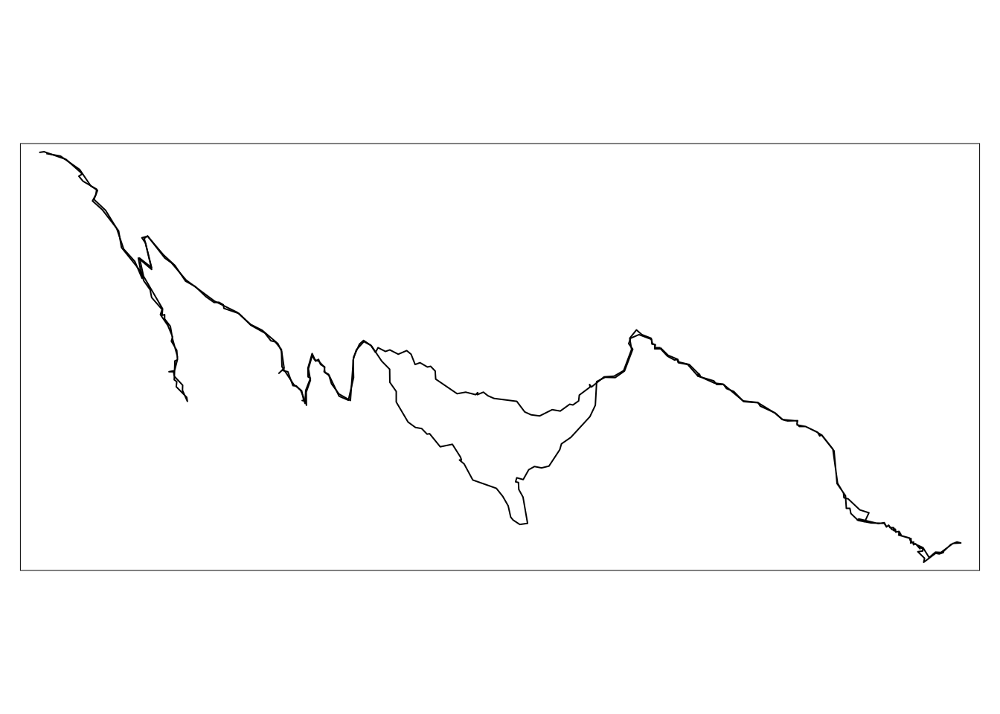
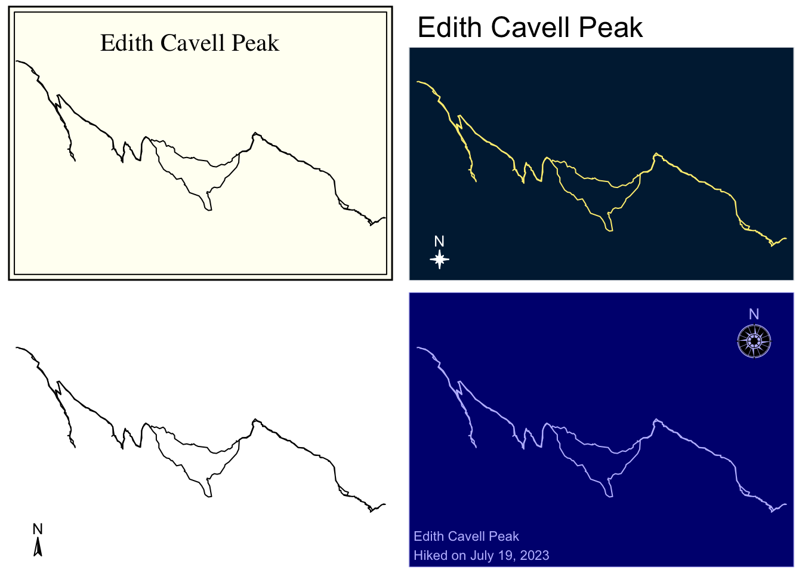
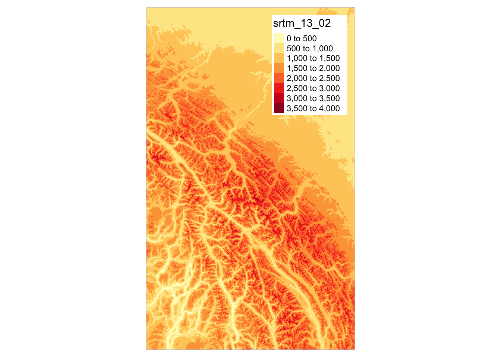
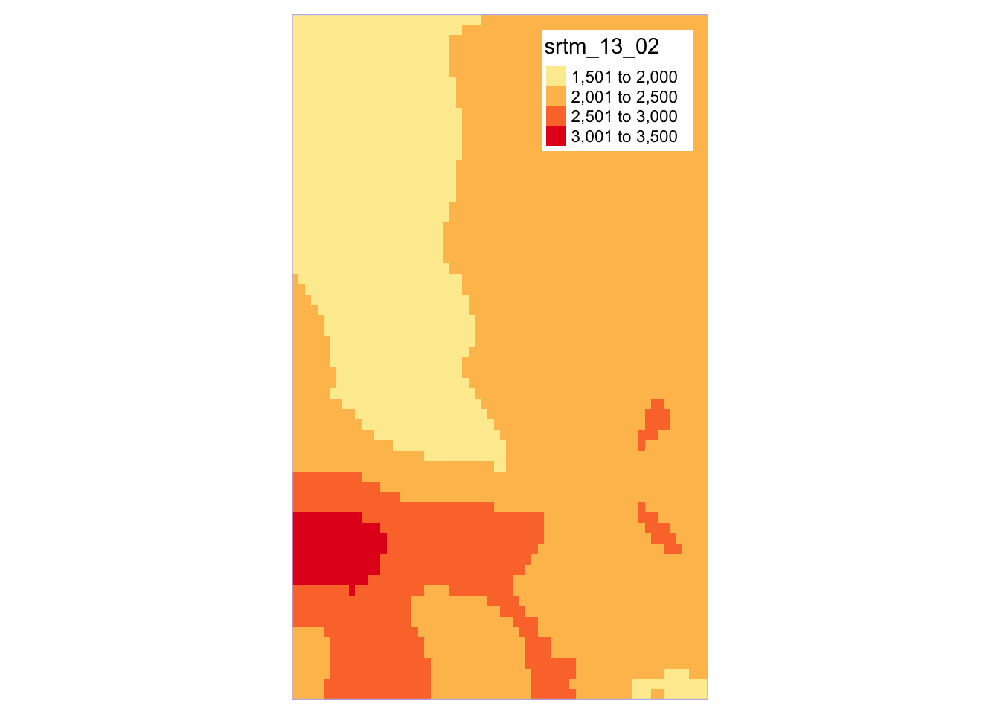
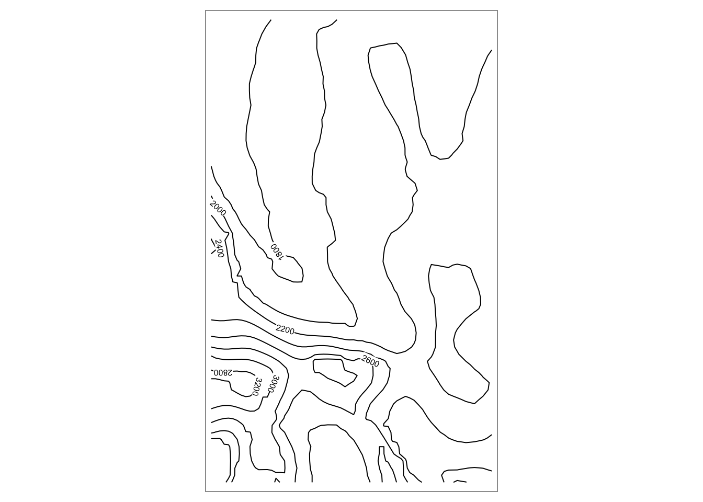
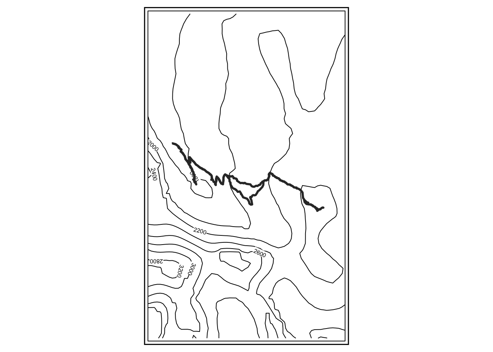
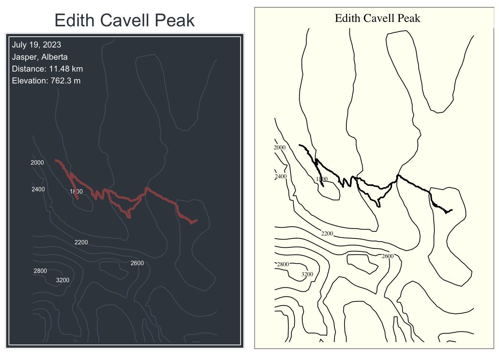
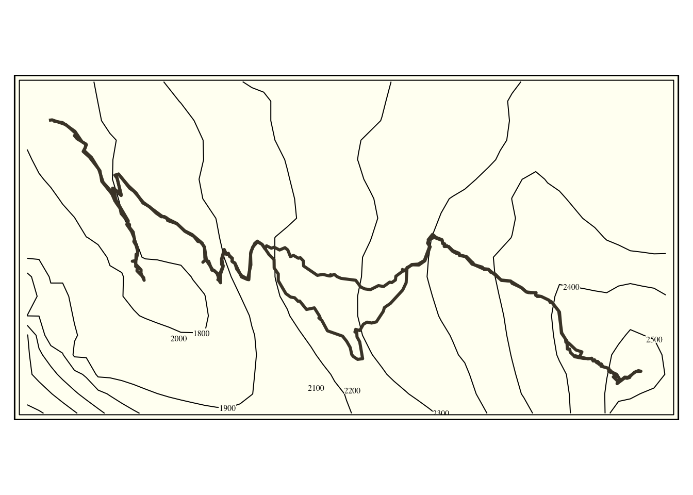

Visualizing Strava Activities
Visualizing Strava Data Collected from the rStrava
I’ve wanted to write a blog post making some data visualization using the Strava API for some time however was never able to come up with a cool idea that wasnt already common among others blogs.
For example, there is the Marcus Volz Strava package which allows you to make some cool visualizations using your Strava data.
Rather than repeat the same usual Strava plots, I’ve focused on mapping some of the hikes I recently went on during a hiking trip in the Rocky Mountains.
The goal is to overlay the GPX Strava data with topographic maps of the area to make a set of posters I can print out to commemorate the trip.
Collecting the data from Strava
I use the rStrava package to read in the activity data. This package makes the process very straight forward.
Let’s download the hiking data using rStrava. It is pretty straight forward to link authenticate your account, the process is covered at the rStrava Github in detail.
Code
# packages used
pacman::p_load(rStrava, dplyr, sf, purrr, tmap, raster)
# strava authenticaion
app_name = "XXXXXXXXXX"
app_client_id = "XXXXXXXXXX"
app_secret = "XXXXXXXXXX"
stoken = httr::config(
token = strava_oauth(
app_name = app_name,
app_client_id = app_client_id,
app_secret = app_secret,
app_scope = "activity:read_all",
cache = TRUE
)
)
activities = stoken |>
get_activity_list() |>
compile_activities() |>
filter(start_date_local >= as.Date("2023/07/15"),
start_date_local <= as.Date("2023/07/23"))With the data, lets make a quick plot of one of the activities. I came across a useful approach to convert the rStrava activity polyline to a simple feature object in this blog by r.iresmi.net.
Code
gp2sf = function(gp) {
gp |>
googlePolylines::decode() |>
map_dfr(function(df) {
df |>
st_as_sf(coords = c("lon", "lat")) |>
st_combine() |>
st_cast("LINESTRING") |>
st_sf() }) |>
pull(1)
}
# plot hike
hike = activities |>
filter(name == "Edith Cavell Peak")
gpx = hike |>
mutate(geom = gp2sf(map.summary_polyline)) |>
st_sf(crs = "EPSG:4326")
map = tm_shape(gpx) +
tm_lines()
map
I am plotting the data as a thematic map using the tmap package. I’ve enjoyed using this package as it has many built in features for customizing maps and follows a similar syntax to ggplot.
Code
map1 = map +
tm_style("classic") +
tm_layout(title = "Edith Cavell Peak", title.position = c("center", "top"))
map2 = map +
tm_style("cobalt") +
tm_layout(main.title = "Edith Cavell Peak",
main.title.position = c("left")) +
tm_compass(type = "8star", position="left", size = 1)
map3 = map +
tm_style("bw") +
tm_layout(frame = FALSE) +
tm_compass(type = "arrow", position="left", size = 1)
text = sprintf("%s\nHiked on %s", gpx$name, format(as.Date(gpx$start_date), "%B %e, %Y"))
map4 = map +
tm_style("albatross") +
tm_credits(text = text, position = c("LEFT", "BOTTOM")) +
tm_compass(type = "rose", position=c("right", "top"), size = 2)
tmap_arrange(map1, map2, map3, map4, nrow = 2)
Adding in the topographic lines
Now that we have the GPX data in our plot, we need to add the contour lines. This is the trickier portion of the project, and is my motivation for writing these steps into a blog post as it wasn’t obvious first where to get the topographic data from, and then how to overlay the information with the Strava GPX data.
The raster package does all of the heavy lifting here. From raster I collect the elevation data using getData("SRTM", lon, lat) which returns
90m raster data based on the latitude-longitude coordinates provided.
Code
elevation_data = getData("SRTM", lon = gpx$end_latlng2, lat = gpx$end_latlng1)
tm_shape(elevation_data) +
tm_raster() +
tm_style("albatross") +
tm_layout(legend.bg.color = "white",
legend.text.color = "black",
legend.title.color = "black",
legend.position = c("right", "top"))
Notice the raster data returned covers alot of land. We will need to crop this down so that we can see the GPX hike data once we add it to the plot. I’m able to crop the raster using the bounding box of the GPX data.
Code
bbox = st_bbox(gpx)
lat = (bbox$ymax + bbox$ymin)/2
lng = (bbox$xmax + bbox$xmin)/2
delta = 0.0275
zoomed_data = raster::crop(
elevation_data, extent(
lng - delta,
lng + delta,
lat - delta,
lat + delta
)
)
tm_shape(zoomed_data) +
tm_raster() +
tm_style("albatross") +
tm_layout(
legend.bg.color = "white",
legend.text.color = "black",
legend.title.color = "black",
legend.position = c("right", "top")
)
Moving from the raster data to contour lines is simple with the raster::rasterToCountor() function. The tm_iso function will plot the countour lines and will include the elevation labels.
Code
contour_lines = rasterToContour(zoomed_data)
tm_shape(contour_lines) +
tm_iso()
Adding the GPX data to the contour lines is as simple as adding in an additional feature to the plot.
Code
tm_shape(contour_lines) +
tm_iso() +
tm_shape(gpx) +
tm_lines(col = "grey20", lwd = 3) +
tm_style("bw") +
tm_layout(frame.double.line = TRUE)
Finally, we can finish this off by adding in some formatting and labelling based on the metadata collected from Strava. Here are some theme options to show off the plot.
Code
info_card = sprintf("%s\n%s\nDistance: %s km\nElevation: %s m",
format(as.Date(gpx$start_date), "%B %e, %Y"),
"Jasper, Alberta",
round(gpx$distance, 2),
round(gpx$elev_high - gpx$elev_low, 2))
dark = tm_shape(contour_lines) +
tm_iso(along.lines = FALSE, size = 0.5, bg.col = "#3c444d", col = "#535f6b") +
tm_shape(gpx) +
tm_lines(col = "#965251", lwd = 3) +
tm_style("cobalt") +
tm_credits(text = info_card,
bg.color = "#3c444d",
position = c("LEFT", "TOP")) +
tm_layout(frame = TRUE,
frame.double.line=TRUE,
bg.color = "#3c444d",
main.title = gpx$name,
main.title.position = c("center", "TOP"),
main.title.color = "#3c444d")
light = tm_shape(contour_lines) +
tm_iso(along.lines = FALSE) +
tm_shape(gpx) +
tm_lines(lwd = 2) +
tm_style("classic") +
tm_layout(frame=TRUE, frame.double.line = FALSE) +
tm_credits(text = gpx$name, position = c("center", "TOP"), width = 1, align = "center", bg.color = "white", size = 1)
tmap_arrange(dark, light, nrow = 1)
Code
# design 3: landscape fitting hike better
elevation_data = getData("SRTM", lon = gpx$end_latlng2, lat = gpx$end_latlng1)
bbox = st_bbox(gpx)
lat = (bbox$ymax + bbox$ymin)/2
lng = (bbox$xmax + bbox$xmin)/2
delta = 0.002
zoomed_data = raster::crop(
elevation_data, extent(
bbox$xmin - delta,
bbox$xmax + delta,
bbox$ymin - delta,
bbox$ymax + delta)
)
contour_lines = rasterToContour(zoomed_data)
landscape = tm_shape(contour_lines) +
tm_iso(along.lines = FALSE) +
tm_shape(gpx) +
tm_lines(col = "grey20", lwd = 3) +
tm_style("classic")
tmap_save(tm = landscape, filename = "thumb.png", width = 4)
landscape